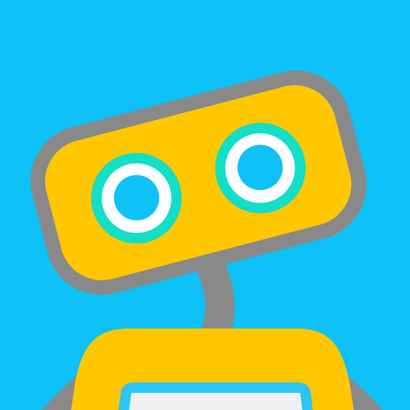

Conversational AI in Psychology
What is Conversational Artificial Intelligence?
Conversational AI, short CAI consists of two principle components:
Machine Learning (ML) is a type of AI that enables systems to learn from experience,
in order to make decisions or predictions.
Natural language processing (NLP) is a branch of AI that gives computers the ability
to fully understand spoken words or text like a human would. With a combination of
Computer Science and Linguistics, NLP makes it possible to analyse data in an efficient, unbiased way.
Traditional Chatbots vs. Conversational AI
Thanks to these two components, the computer is able to not only give simple and often
annoying responses that are seen in chatbots on online shopping websites such as
“Could you rephrase your question, I’m not sure I understand what you mean” or
“I’m going to need more information on your problem” even if you’ve already sent a long
paragraph about your issue 2 minutes ago. With Conversational AI, you get personalised
texts from a program that remembers information that you already gave.
A traditional chatbot needs a pre-written script, is told what to say in response to
keywords and needs to be trained for every scenario, whereas a Conversational AI chatbot
doesn’t need a script, but teaches itself through Machine Learning. It’s able to formulate
follow-up questions and handle human variants.
How does Conversational AI work?
- Data Input: A user provides input
- Data Analysis: NLP corrects any mistakes and breaks down text to make it easier
to understand - Response Generation: The virtual user formulates an appropriate response that
is similar to a human interaction - Machine learning: Inputs are analyzed over time and the AI learns to improve its
responses and gets smarter
Conversational AI in Mental Health Care
There are different ways to use conversational AI, one is “therapy” Chatbots, which will
be discussed in this article.
With the current mental health crisis, a lot of people are in need of psychological care.
Unfortunately, many people aren’t getting the help that they need. This is due to several problems in our society:
- Stigmatisation of Mental Illness
- Expensive Health Insurance
- Missing Education
- Long waiting lists
In trying to overcome the mental health crisis, getting more accessible therapy and mental health
education is crucial. This is why in todays digitalized life, chatbots that talk with the users about
their well-being have been created.
They can include psychotherapeutic techniques like CBT (Cognitive Behavioral Therapy) created by
psychotherapists, offering therapeutic intervention without a therapist. The chatbots can ask about
the users day, current struggles they are dealing with, techniques to calm the patient down or emotional
regulation. Because of the incorporation of CBT, negative thinking patterns can be recognized and
challenged. Targets for the application are people that are unable to access therapy as well as people
that are receiving psychological care and need a little bit more support in their daily life.
An example: Woebot

Woebot is a free application that can be downloaded on iOS and Android devices. Essentially, it’s a
Conversational AI that is based on Cognitive Behavioral Therapy (CBT), Interpersonal psychotherapy (IPT)
and Dialectic Behavioral Therapy (DBT). It sends a daily check-in notification in which the user is encouraged
to talk about how they’re feeling, work on problems or play a word game that teaches CBT skills. There is
also the possibility of keeping a mood tracker and gratitude journal or visiting short courses such as “Changing
how you speak to yourself” or “Communicating your needs”.
The research behind Woebot is done by the clinical psychologist that created the app, Alison Darcy.
Conclusion
Now that we’ve established the basics about Conversational AI’s in Mental Health Care, let’s talk about
the Pros and Cons. As already mentioned, Chatbots can provide accessible assistance that is free of charge,
without depending on licensed psychotherapists that need years of training. Because there is still a lot of
Sigma in the conversation about Mental Health, individuals may feel less afraid of receiving care when starting
out with a virtual assistant before seeking out professional treatment. CAI’s, when used daily, can also be
part of a holistic care plan including traditional psychotherapy, as they offer support anywhere, no matter time
or day. When conversational AI's detect certain keywords that tell them that the user may be in a crisis, they
can give phone numbers to local intervention hotlines. In a study that investigated the efficacy of a conversational
AI (Woebot), participants significantly reduced symptoms of depression and generalized anxiety disorder,
after 2 weeks of using the on CBT based app.
Obviously, there are going to be limitations to digital mental heath assistants. It is clear that
conversational AI chatbots are in no way a replacement for therapy, but simply a tool for managing the
users mental health when not having access to therapy. A chatbot cannot offer a sense of empathy for the user,
nor can it diagnose mental illnesses and treat them. It could be harmful for people to think that only using
a Conversational AI application when dealing with complex mental illnesses is sufficient, when in reality, they
need to work with professionals.
Conclusion
In my opinion, Conversational AI’s are a good short-term way to get trough the current mental health crisis and
therapy placement shortage, but I hope that they won’t be everlasting. Instead of programming applications that
allow users to talk to an AI, which is a completely different experience than talking to a therapist and honestly
just feels a bit weird, we should get to the root of the problem and not only treat its symptoms. We shouldn’t
have to talk to a virtual agent without empathy or ability to form a human connection, in fact, we shouldn’t be
living in such a messed up society that makes 13% percent of the population suffer from a mental illness.
Nevertheless, I’m glad if even one person can better their mental health through one such application right now.
Show sources
- Woebot
- Study: Delivering Cognitive Behavior Therapy to Young Adults With Symptoms of Depression and Anxiety
Using a Fully Automated Conversational Agent (Woebot): A Randomized Controlled Trial - Interview with Alison Darcy
- Conversational AI
- Conversational AI in Mental Health Care
- Mental Health Statistics